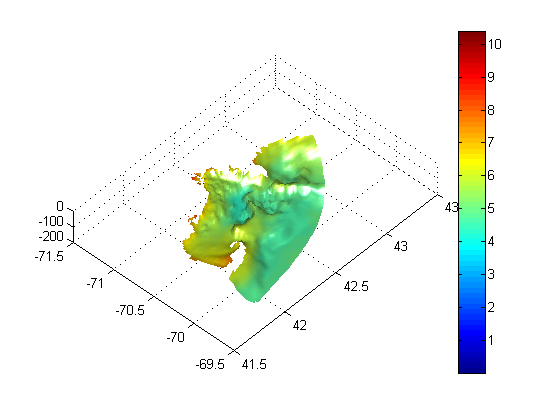

Contents
% DO_INTEROP_PLOT3D: Get a 3D temperature field from different CF-compliant models % % Rich Signell (rsignell@usgs.gov)
Specify input variables
% WHOI-ROMS Model Output %uri='http://science.whoi.edu/users/kestons/redtide_2005_hindcast/OUT/avg_gom_0014.nc'; %uri='http://coast-enviro.er.usgs.gov/models/whoi/redtide_2005_hindcast/avg_gom_0014.nc'; %kbot=1; % bottom level % UMAINE-POM Model Output %uri='http://coast-enviro.er.usgs.gov/models/test/umaine_pom.ncml'; %kbot=21; % bottom level % UMASSB-ECOM Model Output uri='http://coast-enviro.er.usgs.gov/models/test/umassb_ecom.ncml'; kbot=12; %bottom level var='temp'; istep=1;
Call njTBX functions
% Get Data and Geo-Grid at a particular time step [t,t_grd] = nj_grid_varget(uri,var,[istep,kbot,1,1],[1,1,inf,inf]);
View output data
See what we got:
whos t
t_grd
Name Size Bytes Class Attributes
t 68x68 18496 single
t_grd =
lat: [68x68 single]
lon: [68x68 single]
z: [68x68 double]
time: 7.3061e+005
Plot data
% Plot bottom layer temperature in 3D surf(t_grd.lon,t_grd.lat,t_grd.z,double(t)); set(gca,'DataAspectRatio',[1 .74 500]); % for lon,lat in degrees view(43,46); shading('interp'); colorbar camlight headlight lighting phong figure(gcf)